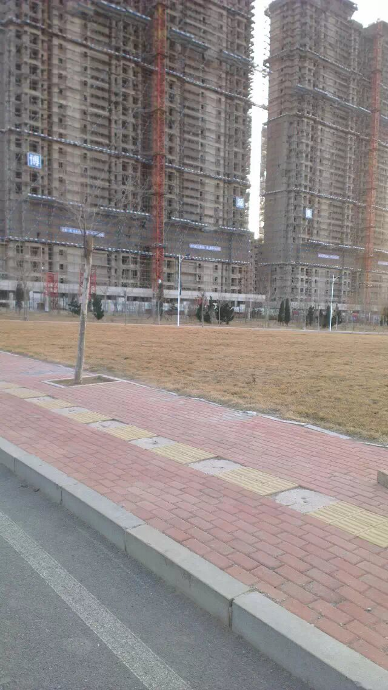
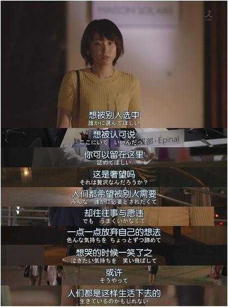

我的爱情故事
文章目录
第一个爱情故事
就如标题所言，这是一个关于你我的爱情故事。这个故事拥有一个美妙的开头，拥有一个破茧成蝶的过程，但是它的结果呢？我希望会有好的结果，但是将来时，只有等它变成进行时甚至是过去时才能知晓结果。而我现在正在等待，正在努力。
时光倒退到N天前，那一天晚上。不是18岁的远行，但我同样不后悔那天的决定。我们的爱情开始于那一个吻，开始于多日的朝夕相处，开始于漆黑的那间屋子。
在那天之前，你挽着我的手臂穿过商场，我叫你老年人；我骑着自行车在蒙蒙细雨中载着你飞向学校，而你则紧紧地搂住了我的腰；你从身后抱住我，轻轻的吻了我的脸颊，跟我说我是好人。
似乎有了你，紧张的应考氛围就突然变得轻松了。偶然中奖得了一张电影票，于是你我去看了第一场电影，好像是特种部队2，你紧张地握着我的手；之后我期待万分的钢铁侠3也上映了，于是你抽出时间陪我去看。唯一有点遗憾的是，看到高潮的时候竟然黑屏了。
在最后的时光里，我们一起挺过高考。最后一科英语考完走出考场，感觉整个世界都解放了。穿着粉红色体恤的你，也在很开心的笑着。我们一起走过了这些磨难，听到了诅咒也得到了祝福，终于可以一直陪伴你了。
人们都总喜欢说事与愿违，事实还总是这样。报志愿的时候，我一时犹豫没有让你报考和我同市的学校。在得知录取结果的时候，感觉世界瞬间崩溃了，说后悔也没有用，我们没在一个城市。暗自庆幸的说，我们相隔说不上天涯海角，几个小时的动车高铁就可以把我带到你的身边。
决策胜于祈祷。如果当初是强迫你改掉报名志愿，也就没有剩下的祈祷与担忧了，也就不会有这一切了。可是，“决策胜于祈祷”可能也是太伤人了吧，无论怎么说，我们接受了异地恋。
在高考之后的那个暑假里，你尽可能的出来找我，那个时候你尚未公开你的爱情。
那一年夏天，姐姐辞职来到我家，带着外甥女。 你还记得小孩和你很合得来吗？你还记得“孩儿她舅妈”这句话吗？你还记得听到小孩稚嫩的叫着舅妈时是怎样的心动吗？
那一年夏天，我们一起出去玩，一起漫步走过数不清的街道，我们一起过了七夕，一起去唱歌看电影。还记得烈日当头你把我叫出来去超市吗？接近三个月的时间不算很短，仿佛人生最后的狂欢，我们也给对方留下了那么多美好的回忆。
然后，随着开学，我们的异地恋也算开始。那天你送我到火车站，你说你不想离开我。火车开动，我在窗口最后的边缘看见了默默流泪的你。你的身影渐渐远去，我却不知要何时才能再见。
最初的时候我还无法接受，可事实也就是这样。我为你许下了太多承诺。我对你说十一能回去，我会给你惊喜，我们会一起去选戒指，我会向你求婚，我会带你去海边去海边漫步，我会带你去看樱花，会与你共进烛光晚宴。我深知自己欠你太多承诺没有实现，而有一些已经过去，那些没有过去的将来时，我希望还会为你呈现。
不知道怀着怎样激动与兴奋的心情，十二月的时候，是我第一次自己坐火车，准确的说是动车。那是分别几个月以来第一次去看你。人们都说异地恋在一起的时间总是特别短，而在一起的时候，分分秒秒总是弥足珍贵的。我们以天为单位的倒计时，以小时甚至是分钟为单位的相聚，我很感动。
那一年的最后一天你说你要来找我，要陪我跨年，因为这一次跨年意味着一生一世永不分离。我仿佛看见了你像小女孩一样天真纯洁的愿望与眼神。我说给你买卧铺，个人技术问题没买到下铺，因为考试我还回去晚了。还记得那次考试帮室友打字呢，好害怕被老师抓走。
在姐姐家里，那晚，你坐在我的身边，趴在我的肩膀上喃喃道你困了，想让我哄你睡。可我却给索爱Mt51i刷机而跨越了一生一世，那是我们第一次跨年，如果可以，我希望我们还可以跨越更多美妙的瞬间。
第一个寒假里，你妈妈生病了，整个寒假也没出来太多次。第一次是1月26日，以班级聚会的借口出来到我家。后来因为社会实践，我终于可以经常看见你。你在书店做帮工，你说推荐一首很好玩的歌给我听，the fox.然后我帮你码字写报告，我们一起去逛街，一起看电影。在二月末的时候，我甚至还以修手机为名义去了次你家，哎这是看岳母啊。
随着开学，我们讨厌的异地恋又要到来了。完成了八分之一，还有七个学期。听不到的心跳，看不见的面容，掩不住的孤独，触不及的温暖。四月份趁着动车没有变成高铁，我再次来到你的身边。最不幸的丢了钱包，挨了骂。你在车上不停的流眼泪，好像丢的不是钱包而是我，好像丢了你的钱包。不过好在后来我们都慢慢解决了这些问题，我们一起手拉手看了第一场IMAX电影，第一次真正的经历磨难。
五一之后你一直特别忙，可能广播台制作部的工作太繁忙，也可能有别的原因。本来25日说好了和姐姐一家人去海边玩，结果你却因为家人要去看你突然回去了。在你确认这条消息的时候，我正在帮你查着什么网课的答案，默默地留下了眼泪。那时候你的心情一定很复杂吧，不仅仅是因为提前的分离，还有你内心深处的犹豫吧。此次分离，下次相聚在何时。
之后我发现事情越来越不对劲，你开始不愿意理我。当我开始搜集信息的时候，你突然跟我说，要不分手吧。我拒绝了，在收集到更多信息的时候，发现你把你的爱分给了别人……你去质问你，你找借口搪塞，直到我拿出关键性证据，你也不愿意承认这一切。在你把你的手伸向别人的时候，不知道你有没有想过我的感受。或许在那时，你已经不爱我了吧。我预见了这件事情，却没预料到这个结果。
我瞒着姐姐，买了多坐了一站的票去看你。你告诉我你在学校里骂了我半个小时，在车上骂了我半个小时。是我的错，we create our own demons.
我去商场买了一支玫瑰，那是我第一次送你花。你说，你很喜欢，那也是你第一次收到玫瑰。你还说你要拍照留恋，很不幸的我们把它忘在了旅馆。我安慰你说，没事，等回去了我再送你啊。
你还记得那次向全校广播的“音乐晚点名”吗？我留言说，无论我们相距多远，我都不会离开你，不离不弃，守侯终生。还有几天就可以看到你，还有几周就可以拥抱你，还有一辈子的时间可以跟你戏耍玩闹。我们还有一辈子的幸福生活，我爱你。
你说你要努力学习，你告诉我，如果你不挂科，回去就向你的父母公开恋情。我诚恳的希望你带回家的会是我，而不会是其他人。
对不起，我没能给你爱情中本应该有的惊喜，没能给你爱情故事里的陪伴与照顾。我欠你那么多，就像那首小诗里说的一样：有很多事情你都没做，容忍我包容我，有许多许多的事情我要回报你，等你从越南回来。但是你没有。我也没有。
远方的你要照顾好自己。你并不孤独，尽管我不能陪在你身边，可是你并不孤独。孤独寂寞并不能成为爱情的羁绊。
你是我这辈子遇见的人，我愿以我毕生之力给你应有的幸福。你还年轻，让我陪你一起白发苍苍；你还幼稚，让我陪你渐渐成熟。无论是否命中注定，你都已经成为我生命里的一部分。你是我的家人，我的家人也把你当做家庭的一分子。也许远水不解近渴，远亲不如近邻。尽我微薄之力，给你最多的幸福。
而在这，我可以说吗？不用等到熬过异地，我娶你可好？你并不孤独，我陪伴在你的身边。不管你多远，我守候在天边。
在火车站分别之前你轻轻对我说，我爱你。也许这是这个世界上最美妙的情话。我再也忍不住我的泪水，我也爱你啊。我们暑假的时候就可以见面了。
我相信你，张开臂膀给你回归的拥抱。
在经过了这一切的闹剧之后，我心生邪念，我用了一切不合理的手段去得到我想要的信息。备份，克隆，截图，上传，猜测密码。我拿到了我的杀手锏——所谓的证据。
在闹剧之后，你要参加一个比赛的啦啦队，于是我放假回去看你。我不知道那个时候我是有多傻，你就是随口说了一句想吃高中附近的章鱼小丸子了，于是第二天我就傻乎乎的去买了，坐着一个小时多的脏乱拥挤的绿皮车，冒着大雨送着冰凉的章鱼小丸子给你。你生气了，可是你又很感动，你说以后别这样再傻了。是不是觉得很像小说里的剧情？
随着我慢慢的重新相信你，我以为，可以开始新的生活了。直到十月末，同样的事情同样的人再一次上演。放弃吧，恰巧两次回家，那是我们吵的最厉害的时候——我在六楼七楼之间。你求我不要分开，你一直在哭泣，可我却面无表情，因为我真的绝望了，我不敢相信你们都做了什么，我们互相坦白甩底线，我把一切都告诉了你，我也曾是一个卑鄙小人，为了自己的欲望而不择手段。
怎么都没想到的是，后来因为的表白墙，他觉得被侮辱了和你大吵一架，我的目的竟然达到了，我们竟然意外的化解了所有的矛盾。生日那天你和我们十一个人在一起，T跟我们说，希望我们以后会好好的，不计前嫌。我们说，好。那时的感觉就像是初恋一样，一切都是那么清新。
我真的以为这一切都好了，这真的是一个关于你我的幸福爱情故事。这就是我们说的恩恩爱爱不计前嫌，是史密斯夫妇。直到Q告诉我这一切的变化：
所有的一切都不再是我记忆中的样子，所有的一切能表明我们曾是爱人的印记都消失了，一点都没剩下...是我太窝囊了，一点都没有给你女人想要的安全感，我知道是我做的不对做的不好...是我的错。一切都是我的软弱。
接近两年的努力和付出，就这样悄然结束了。从来没想到自己会如此骄傲的把你介绍给所有人，而在那时，我也从来没想过今天的我会如此的狼狈不堪...我们还是输了，是我，最终还是输给了异地输给了距离输给了曾经想都没有想过的隔阂。相爱的往日，熟悉的温度，紧紧相拥着度过的夜晚。
好像一场梦啊。在这些个不眠夜里，我每天起床，吃饭，生活，慢慢的，我也就不用再提醒自己起床吃饭生活。慢慢的，我也就会忘记那些曾经的温暖与甜蜜。那个跨越时空的邂逅，那些个不眠夜的痛苦。
在爱你的两年里，我的心从来没有变过；细水长流，爱你的这两年里，我无悔。感谢你的存在与陪伴，感谢你的亲吻与拥抱。或是此生无缘，或是阴差阳错，或许我们就注定不能修成正果。如今你带回家的人，已经不会是我了...
这是一个关于你我的心酸的爱情故事，它意外终结了。本以为会在某一年由我们两人一同续写，可没想到却在今天由我一人续结。纪念我们的青春爱情。
CH说，主动爱一个人很辛苦，每天追着他到处跑，想在他身边，结果他留给你的，全都是背影。本以为心灰意冷再寻他人，可连自己可能都不清楚他始终在心里。看着他离开你，和别人欢笑。直到看见他和其他女生在一起了，才知道嫉妒是件多么恶心的事情。

开学当我再次回到学校的时候，想起了这里曾经站着等我的你：
再一次来到这里，再一次来到这个怦然心动的地方。这里，是你那年的回忆，是我昨日的记忆。
很快两年了。
再一次来到这里，再一次来到这个怦然心动的地方。可这里，已不是你那年的回忆，却依旧是我昨日的记忆。
很快三年了。
在分开整整三年之后，我偶然看到你与相爱三年的另一个他分开了。我看到了你的背影，你扎着麻花辫，背着那个我还认得出来的五年前的淡蓝色书包。你说你最喜欢蓝色了。安好，愿求一切安好，愿求你不再为爱情伤，愿你幸福。
很快六年了。
短暂的重逢之后，我们又走向了不同的道路。我会永远记得我对你的亏欠，可是我知道我们再也回不到过去了。
Even when we've gone to separate ways, in my heart you'll always stay.
第二个爱情故事
我曾经喜欢过一个人。
我和你相识于差不多2016年 12 月 9 日，我记得这么清楚是因为那晚我几乎没睡觉。为什么没睡觉呢，导员给我一个MacBook Pro让我给装双系统，可是又偏偏不记得密码，大概是有点兴奋吧。半夜里突然醒来，打开手机，发现她竟然也给我发了正确的密码。新的MacBook还是很好的，用BootCamp装双系统很容易，旧的型号可能会比较困难（毕竟俺不是专家嘛）。
下午去图书馆，有个学弟恰巧看到我，说一会可能有个学妹要找我。我说好啊。大概傍晚时刻，“偏执狂”的你来找我，是因为你也想像我一样，有一个自己的博客。于是便聊得很开心，有一种相见恨晚的感觉，毕竟能够在身边遇到一个喜欢写博客的人还是很少见的。
也许就是因为这些很相似的感觉，我发现我似乎喜欢上你了。《影响力》中不是说过嘛，我们喜欢与自己相似的人。不管相似之处是在观点、个性、背景还是生活方式上，我们总有这样的倾向；我们会下意识地向跟自己相似的人作出正面反应。
后来在 23 日，也真的是很巧的一天，我把你约出来见面。我说我能在五分钟之内帮你搭建一个“Hello World”的 博客，于是真的在五分钟内帮你搭建了 Typecho 的博客。尽管我的心意早已被你发现，也早已被拒绝，但还是觉得这样无所谓的努力挺好的。
然后一切就这样进行着，也许有些暧昧。为了你二次开发了一款功能强大的漂亮的 Typecho 主题，为你提供了很多学习资源，也准备了很多资料，因为对我来说你已经不是轻易地可以去放弃的人。甚至是，我没有忘记随想说的一句话，尽可能的去影响身边的人。于是我写出了很多针对性非常强的文章，或者在你的启发引导刺激下写出了很多自觉优秀的文章，有些文章甚至得到了很多人的赏识与称赞。甚至是，我带领着你来到墙外，去使用 Google，去使用 Twitter，去使用那些优秀的产品与服务，去接受自由思想与批判性思维，甚至到后来你有了一个只有我一个联系人的聊天应用：Telegram。
在接下来的生活中，一切突然开始变得有些愚蠢。恰巧在一年前，我偶然发现周一上午你我前后在同一间教室上课。我傻乎乎的提前去教室门口等着，只是为了能够在你下课的时候见你一面。也许是一个假期没见吧，可能那时候脑海中已经逐渐模糊了你的面容，但是在看到你从教室里走出来的时候，突然感到一丝心动：I flipped.只是很不幸的两周之后我换了教室，再也不能这样创造偶遇了。
如果说偶遇是偶然遇见，是小概率事件，那么我这里的偶遇，大概有一半以上都是被我硬生生的创造出来的。我精巧的计算着时间，思考着路程，像小偷一样四处张望生怕错过每一次可能的"偶遇"。四处张望寻求的虚假偶遇与昙花一现的短暂美好，想想也是很可爱的。
那句话是怎么说的，黄色的树林里分出了两条路，我选择了绕远的那条路，是因为我知道哪怕有万分之一遇见你的机会也是值得的。那次我绕远取快递，真的没想到回来的路上遇见了你。喂，下次走路的时候要记得看见我啊，不要让我每次都喊你的名字。
实习之前的那个暑假，听人说偶遇你，唉，看到别人说的偶遇，都感觉是一种幸福。曾经张望了四个月的偶遇吧。也许你不曾知道，The tiniest possibility of seeing you again excites me.
也许就是在这种不明所以的情况下，我开始像有了目标有了动力一样。我还记得，第一次见面的晚上你说她喜欢 Linux 和英语好的人，那时我心里暗想，这好像在说我。然后我通过了专八，找到了满意的工作，也更进一步接近了 Linux。
我记不清我都做了些什么，但是每件事情都已经倾尽全力。我们曾经一起出来学习，也去看过 IMAX 电影。在我最难过最绝望最需要拥抱的时候，你买了樱桃陪我在操场聊天。如果那时牵起你的手，你会是什么表情，你会作何反应？
我永远也无法忘记见到你时的兴奋感，永远也无法忘记听到你说话时的幸福感，永远也无法忘记看到你嘴角微笑时的满足感。我还记得你的眉眼，还记得你的曼妙身姿，还记得你的温暖与心跳，还记得与你相处的每一片美好记忆。
在某一个时间点，我以为这一切都开始发生了转变，我以为我们在一起了。我好想抱抱你啊，你说，这不是抱到了吗。我都快忘记了这种温暖的拥抱的感觉了。那次在影院里一起看的《敦刻尔克》可能是人生中最美好的一次观影体验了。
然而这一切并没有我想的那么简单。直到我知道你的故事，我才意识到我只完成了前两个梦想。两个月，变化的这么快，连 Telegram 都从你的手机里消失不见了，不知道一起消失不见的是否也有自由思想、独立思考与批判性思维。我甚至开始害怕发生《伤仲永》那样的事情，可能也许是我想太多了吧。
但这些都是我的主观看法啊，也许你只是一直很厌烦我吧，也许我只是在自作多情吧，也许你该生我的气了吧。将两个人的过去，全部破坏掉吧，快变的讨厌我吧。你的博客停留在半年前的更新，你的面容也定格在两个月之前。如果我足够理性，我应该继续帮你维护博客，去做一些尽可能的事情，而不是 “删库与跑路” 吧。不知你夜里的梦中或白天的记忆中是否有我。我魂牵梦萦的你，是否也思念着我。人若有灵魂，皆因心间有爱；不畏时间的考验，不受死亡的束缚。
也许无论我曾怎样努力，无论我曾怎样与你拥抱，真的要认清这一切了吧……也许你不曾记得你拉着我的手的时候，也许你不曾记得那天的日出，也许你不曾记得相拥时的温暖与心跳……如果是梦那么该多么美好啊，还可以在梦里看到你。黑暗中追寻着你的背影，那轮廓记忆犹新……此情可待成追忆，只是当时已惘然。
恰如溺水的人，想尽最后一番挣扎，可是我却无法改变你离去的幻梦。迷失在谎言与真相之中，我想我该死心了。一如往常就好，我放弃了，我累了，什么也不做，什么也不求。??
也许我该很俗的说一句，祝你幸福。可能也就这样了吧。只是，这里没有末路，你从不曾孤独，你是我曾经深爱的那个人。
可是，当这一切都变得复杂万分，当我渐渐了解到你对我的信任，当我逐渐了解这一切的来龙去脉、知道这些背景与故事之时，我却不知道该如何是好。眼见何事，情系何处，身在何方，心思何人。你在何方，心思何人？
第三个爱情故事
人们都希望被别人需要，却往往事与愿违。
其实这里根本没有第三个爱情故事。所谓的第三个爱情故事，甚至都不存在于梦中。
もう やめる、もう疲れた。何もしない、何も求めない。
电车上的你，一点点的表情都在说着难过。你说你放弃了，累了，什么也不做，什么也不求。一边的眼睛湿润了，流泪了，车到站了，笑着说，我们走吧。

希望被选中，希望得到认可，然而我却与理想中的自己渐行渐远了。
如此温柔的两个人。
你是我永远无法企及的梦想，却又是我孤独的生活的一丝希望与慰藉。马上就要看到你，马上就要再一次被你治愈♥
当再一次被你治愈之时，我就往往会想，如果此时身边能够有人给我一个拥抱就好了；在想着，如果有人需要我就好了；在想着如果能被选中、被认可就好了。可是到头来我却还是孤独一人。生于黑暗还是适应黑暗——也许我并不会从黑暗中崛起。
结衣酱，请你再一次治愈我。
其实我是一个挺懦弱、胆小怕事的人。在面试X公司之前，我几乎没有什么面试经验；来到X公司，看到身边一些人主动离职之后，我还是觉得能够留在这里挺幸运的。可能对于我来说，我需要的就是一个稳定的工作与收入了。就像对于今日子小姐来说，人生中只要有钱再稍加些谜团就够了。
我一直觉得能够在当前的环境下生活下去就很好。其实自己一个人也挺好嘛，生活（生存）压力比较小，无忧无虑，能够养活自己，想干嘛就干嘛，还能攒下很多钱。可能我的生活也就是这样了吧。没有什么特殊的意义，只是普普通通的生活。
也许这一切的过程都看起来很傻很天真，傻到足以被千夫所指，但至少我曾认真对待，至少我未曾轻浮……至少我不应该只能听到这样不经心的评论，至少我应该能够得到一点点认真的肯定。
这三个爱情故事本不存在，都是我一个人的单相思与痴心妄想，散了吧。只是……
下次见面时 请你重新再追求我一次?
第四个爱情故事
我以为这次重逢会有结果，可是并没有如我所愿。
谢谢你带给了我这么多美妙的体验与经历，就让这一切在此结束吧。
迷失。
I wonder if I come to you at night, in dreams;
in the day, as memories.
Do I haunt your hours the way you haunted mine?
If we have souls, they are made of the love we share.
Undimmed by time.
Unbound by death.
本站默认采用CC-BY-NC-SA 4.0协议进行授权 转载必须包含本声明，并以超链接形式注明原作者和本文原始地址


评论
44 条评论